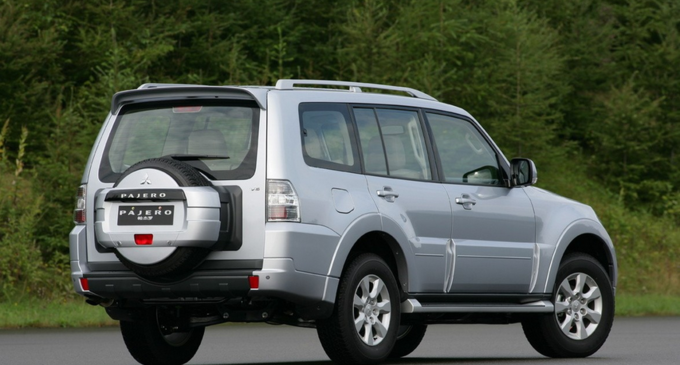
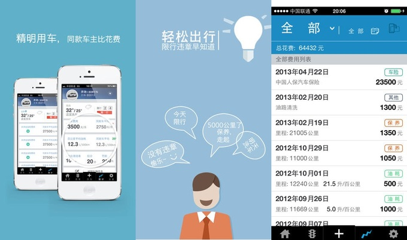

前百度爱乐活员工创办车主社交平台“车记”，已获险峰华兴数百万元天使投资
- 
“车记”是明年 1 月即将上线的一款车主社交平台，由前百度爱乐无线产品部总经理张威和其同事科斌于今年 7 月创办。近日，张威向36氪透露，公司在今年年中成立之初已获险峰华兴数百万元天使投资。
为解决社区的冷启动问题，车记在今年 5 月曾推出一款针对车主的用车费用管理工具“汽车管家”，目前下载量已超过百万。通过汽车管家，车主可以清楚记录和分享用车过程中产生的费用，了解用车花费的分布，同时也可以看到同款车其他车主的用车数据，通过数据比较可以更精明的使用爱车。且汽车管家会根据每位车主的情况进行个性化的用车提醒。

承袭前奏产品，将于明年 1 月发布的车友社区车记也将把用车情况交流作为主题切入。拥有同款车型的车主将自动聚合到同一小组，随时分享用车心得。而在张威看来，车主拥有的车款车型一定程度反映了车主的经济状况和兴趣方向，这为小组话题的进一步深入提供了前提。
和另一款汽车社交应用“奔奔”类似，车记的后一步也盯准了汽车后市场服务。张威认为，真实的车主、车型、用车习惯将为后市场提供精准的数据服务。
（来源：36氪）